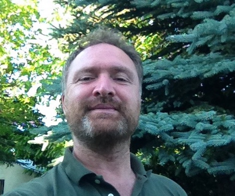

| Galatasaray University |
Mathematics Department | Vita
|
Publications |
Favorite Quotes |
Contact Info |
Some Links |
Caddebostan Fossils |
| Mathematician's Impasse |
Yükseköğretim politikaları |
Olmak
ya da olmamak
|
Gerek
mi yeter mi? |
Tübitak projeleri | Yahya Efendi |
https://twitter.com/metamathician
|
Research
Interests
These days I am working on a wonderful number theoretic function which I call ``the conumerator" (with Buket Eren). It is related to an exotic involution jimm -(see my recent talk)- of the real line which conjugates the Gauss map to another dynamical system (see our recent paper with Hakan Ayral). Jimm induces a subtle symmetry of Lebesgue's measure and we are working on related measures (with İsmail Özkaraca). Jimm conjecturally sends algebraic numbers of degree>2 to transcendentals (for numerical confirmation see our working paper with Hakan Ayral). Here is a long and a short paper about jimm and here is a paper about its derivative. I also have some dreams about a space I call "Heyula", on which the general linear group over Q acts, hoping that I can prove via this action my conjectural (nice) presentation for the latter group. All these are related to dessins, binary quadratic forms, dynamical systems, transfer operators, Gauss-Kuzmin theorem, the Selberg zeta function, the Fibonacci and the Lucas zeta functions, Thompson's groups, Minkowski and Denjoy measures and to some aspects of the Teichmüller theory. Here is my recent talk on Mapping Class Groupoids and Thompson groups (2018) where I construct the OMG groupoid to rule over outer groups, mapping class groups and Thompson's groups. See the TEMOG project page for more details. Over the time I worked on algebraic geometry, orbifolds and all that is hyper: hypergeometry, complex hyperbolic geometry, hyperplane arrangements, topology of hypersurface complements. I was initiated to research in complex analysis. Motto: Knowledge without research
eventually stagnates!
|
Scientific Events
|
|
A Visualisation of PSL(2,Z) Here is a modular group toy (developed by Ayberk Zeytin and Hakan Ayral) Enjoy! (needs flash) The cells in the "slit" disc represents the elements of the modular group; in fact, what you see is nothing but a very fat Farey tree. Fat branches meet along the slits. Clicking on a cell brings it to the center and this way you can travel to infinity. Venture beyond the numerical limit and you will be rewarded! Continued fractions and congruence subgroups animations will appear soon! Prize question. Find explicitly the conformal isomorphism between the Poincaré disc and the (properly defined) slit disc. Here is a simpler version modular group toy (now it opens in Seamonkey browseronly) and here's a advanced free android version. |
|
Editorial Work
|
Books
|
Teaching Probability, Complex
Analysis, Discrete mathematics, Automata and theory
of languages, Introduction to Cryptography,
Complexity and theory of languages, Numerical
Analysis, Introduction to Mathematical Logic and Set
Theory, Linear Algebra, Calculus, Real Analysis,
Complex Analysis, Functional Analysis, Riemann
Surfaces, Abstract Algebra, Ergodic Theory and
counting..
Motto: To inspire is more important then to
teach! |
Some Links Istanbul Matematik Doktora Okulu (Istanbul Graduate School of Mathematics) Fasikül (Journal of the GSU Maths Department) turkmath.org (Mathematical events in Turkey) Gökova Geometry/Topology Institute Matematik kafası Mathoverflow in Turkish) Türk Matematik Derneği (Turkish Mathematical Society) Istanbul Matematiksel Bilimler Merkezi (Istanbul Center for Mathematical Sciences) Nesin Matematik Köyü (Nesin Mathematics Village) Çakılarası Matematik Köyü |
FAVORITE QUOTE Not everyone is able to pass through all these stages quickly and to cut through all these veils easily during the (process of) instruction. Disputes often cause the mind to stop at the veils of words. Disturbing quarrels and doubts cause it to fall into the nets of argument, so that the mind is prevented from attaining its objective. Rarely do more than a few (individuals), who are guided by God, succeed in extricating themselves from this abyss. If you are afflicted by such (difficulties) and hampered in your understanding (of the problems) by misgivings or disturbing doubts in your mind, cast them of ! Discard the veils of words and the obstacles of doubt! Leave all the technical procedures and take refuge in the realm of the natural ability to think given to you by nature! Let your speculation roam in it and let your mind freely delve in it, according to whatever you desire (to obtain) from it! Set foot in the places where the greatest thinkers before you did! Entrust yourself to God's aid, as in His mercy He aided them and taught them what they did not know! If you do that, God's helpful light will shine upon you and show you your objective. Inspiration will indicate (to you) the middle term which God made a natural requirement of the (process of) thinking, as we have stated. At that particular moment, return with (the middle term) to the molds and forms (to be used) for the arguments, dip it into them, and give it its due of the technical norm (of logic)! Then, clothe it with the forms of words and bring it forth into the world of spoken utterances, firmly girt and soundly constructed! Verbal disputes and doubts concerning the distinction between right and wrong logical evidence are all technical and conventional matters. Their numerous aspects are all alike or similar, because of their conventional and technical character. If they stop you, (you will not be able) to distinguish the truth in them, for the truth becomes distinguishable only if it exists by nature. All the doubts and uncertainties will remain. The veils will cover the objective sought and prevent the thinker from attaining it. That has been the case with most recent thinkers, especially with those who formerly spoke a language other than Arabic, which was a mental handicap, or those who were enamored with logic and partial to it. They believe that logic is a natural means for the perception of the truth. They become confused when doubts and misgivings arise concerning the evidence, and they are scarcely able to free themselves from (such doubts). As a matter of fact, the natural means for the perception of the truth is, as we have stated, (man's natural ability to think, when it is free from all imaginings and when the thinker entrusts himself to the mercy of God. Logic merely describes the process of thinking and mostly parallels it. Take that into consideration and ask for God's mercy when you have difficulty in understanding problems! Then, the divine light will shine upon you and give you the right inspiration. God guides in His mercy. Knowledge comes only from God (Ibn Khaldun, al-Muqaddimah). |
|
FAVORITE QUOTE The sole means now for the
saving of the beings of the planet Earth would
be to implant again into their presences a new
organ ... of such properties that every one of
these unfortunates during the process of
existence should constantly sense and be
cognizant of the inevitability of his own death
as well as the death of everyone upon whom his
eyes or attention rests. Only such a sensation
and such a cognizance can now destroy the egoism
completely crystallized in them. (Gurdjieff,
All and Everything, via Alan Watts, On the taboo
against knowing who you are) - upon my
meditations on what positive thing one should
fathom from some unfortunate decapitation scenes
I have seen on the media.
|
|
FAVORITE QUOTE
..it is certain that the
ultimate particles arc allowed no rest
anywhere in the unfathomable void;
rather they are harried by incessant
and various movement, some rebounding
to considerable
distances after they have clashed,
others leaving short inter-spaces when they
have been jerked back from collision.
And all those that are concentrated in
closer union and rebound only a very
short distance apart, entangled by the
interlacement of their own shapes,
form the basis of tough rock, the bulk
ofstem steel, and other such
substances. Of the rest that pursue
their roving course through the vast
void, a few spring far apart and
rebound to considerable
distances, thus furnishing us with
unsubstantial air and radiant
sunlight..
LUCRETIOUS, On the Nature of Things, Book II, −98 −55 B.C. |
FAVORITE QUOTE BOOK XI As to living in the best way, this power is in the soul, if it be indifferent to things which are indifferent. And it will be indifferent, if it looks on each of these things separately and all together, and if it remembers that not one of them produces in us an opinion about itself, nor comes to us; but these things remain immovable, and it is we ourselves who produce the judgements about them, and, as we may say, write them in ourselves, it being in our power not to write them, and it being in our power, if perchance these judgements have imperceptibly got admission to our minds, to wipe them out; and if we remember also that such attention will only be for a short time, and then life will be at an end. Besides, what trouble is there at all in doing this? For if these things are according to nature, rejoice in them, and they will be easy to thee: but if contrary to nature, seek what is conformable to thy own nature, and strive towards this, even if it bring no reputation; for every man is allowed to seek his own good. Consider whence each thing is come, and of what it consists, and into what it changes, and what kind of a thing it will be when it has changed, and that it will sustain no harm. If any have offended against thee, consider first: What is my relation to men, and that we are made for one another; and in another respect, I was made to be set over them, as a ram over the flock or a bull over the herd. But examine the matter from first principles, from this: If all things are not mere atoms, it is nature which orders all things: if this is so, the inferior things exist for the sake of the superior, and these for the sake of one another. Second, consider what kind of men they are at table, in bed, and so forth: and particularly, under what compulsions in respect of opinions they are; and as to their acts, consider with what pride they do what they do. Third, that if men do rightly what they do, we ought not to be displeased; but if they do not right, it is plain that they do so involuntarily and in ignorance. For as every soul is unwillingly deprived of the truth, so also is it unwillingly deprived of the power of behaving to each man according to his deserts. Accordingly men are pained when they are called unjust, ungrateful, and greedy, and in a word wrong-doers to their neighbours. Fourth, consider that thou also doest many things wrong, and that thou art a man like others; and even if thou dost abstain from certain faults, still thou hast the disposition to commit them, though either through cowardice, or concern about reputation, or some such mean motive, thou dost abstain from such faults. Fifth, consider that thou dost not even understand whether men are doing wrong or not, for many things are done with a certain reference to circumstances. And in short, a man must learn a great deal to enable him to pass a correct judgement on another man's acts. Sixth, consider when thou art much vexed or grieved, that man's life is only a moment, and after a short time we are all laid out dead. Seventh, that it is not men's acts which disturb us, for those acts have their foundation in men's ruling principles, but it is our own opinions which disturb us. Take away these opinions then, and resolve to dismiss thy judgement about an act as if it were something grievous, and thy anger is gone. How then shall I take away these opinions? By reflecting that no wrongful act of another brings shame on thee: for unless that which is shameful is alone bad, thou also must of necessity do many things wrong, and become a robber and everything else. Eighth, consider how much more pain is brought on us by the anger and vexation caused by such acts than by the acts themselves, at which we are angry and vexed. Ninth, consider that a good disposition is invincible, if it be genuine, and not an affected smile and acting a part. For what will the most violent man do to thee, if thou continuest to be of a kind disposition towards him, and if, as opportunity offers, thou gently admonishest him and calmly correctest his errors at the very time when he is trying to do thee harm, saying, Not so, my child: we are constituted by nature for something else: I shall certainly not be injured, but thou art injuring thyself, my child.- And show him with gentle tact and by general principles that this is so, and that even bees do not do as he does, nor any animals which are formed by nature to be gregarious. And thou must do this neither with any double meaning nor in the way of reproach, but affectionately and without any rancour in thy soul; and not as if thou wert lecturing him, nor yet that any bystander may admire, but either when he is alone, and if others are present... Remember these nine rules, as if thou hadst received them as a gift from the Muses, and begin at last to be a man while thou livest. But thou must equally avoid flattering men and being veied at them, for both are unsocial and lead to harm. And let this truth be present to thee in the excitement of anger, that to be moved by passion is not manly, but that mildness and gentleness, as they are more agreeable to human nature, so also are they more manly; and he who possesses these qualities possesses strength, nerves and courage, and not the man who is subject to fits of passion and discontent. For in the same degree in which a man's mind is nearer to freedom from all passion, in the same degree also is it nearer to strength: and as the sense of pain is a characteristic of weakness, so also is anger. For he who yields to pain and he who yields to anger, both are wounded and both submit. But if thou wilt, receive also a tenth present from the leader of the Muses (Apollo), and it is this- that to expect bad men not to do wrong is madness, for he who expects this desires an impossibility. But to allow men to behave so to others, and to expect them not to do thee any wrong, is irrational and tyrannical. (The Meditations By Marcus Aurelius) |
ALL-TIME FAVORITE QUOTE Cosmic Unification in the Presence of the Eye-witnessing through the Assembly of the Human Tree and the Four Spiritual Birds ".... Then I shouted: "Oh
alas!" and "Alas, my burning heart. I fled from the
universe and here I am in it. Where is what I seek?" ... I answered: "Oh you who obstruct me, your words have wounded me. Do you not know that you speak from your own station? You are in the presence of the essential being, divested of time and place, while I am in this dark sea, in this thick gloom and this fearful calamity, in this mine of lies and doubt, this place of faults and vices. Does not the one who is prisoner of quantity and quality and precepts of wisdom cry out: Woe!? If you extract me from the crashing waves and deliver me from the horror of this gloomy night I will never more pronounce the adverb or the preposition of place." ... Through his irresistible power he attracted me to himself and said to me: "You are vanquished, so seek help!" ... When he attracted me to himself I saw myself in another form than my previous one and I established myself there, firmly and steadily. I said: "Oh I!" He said: "I, welcome!" I said: "No welcome, no greetings, no make yourself at ease!" He said: "Oh eye-balm, what is the doubt that assails you? Oh prisoner of creation, what is afflicting you?" I answered: "You do not cease from veiling me from myself. Unveil me to myself so that I can know myself!" ... When I heard that there was still a trace of createdness before me, I feared that it would cut me off from my cognizance. So I rose from that gloomy darkness, leaving the Burâq of my aspiration in it. I was transported to the thrones of subtle grace and the cushions of the celestial couches, until I reached the station of rejoicing where I set myself to oscillate like a hanging lamp. I said: "What do I have to do with the state of audition?" Someone said: "It is the beauty of the rhythm that has set you in motion." I said: "I didn't feel it." Someone said to me: "Be careful! For you are in yourself and not in him!" I said: "Reality is beyond the rhythms of song. What it demands is extinction within extinction." No sooner had I pronounced these words than a veil was lowered between my essence and his essence and a condition was set between him and me. ... Then the Universal Tree of the garden, described as the Likeness, was unveiled to me I observed a tree "whose root is firm and whose branches are in the heavens." Its fruit is in the hand of the Deity, established on the Throne. Among its branches sat the Crow and the strange Anqâ, and in the shelter of its boughs perched the Eagle and the Ring Dove. I greeted the Tree and it answered, greeting me even more finely. It said: "Listen, O wayfarer, O king." Discourse of the Universal Tree, described as the Likeness "I am the universal tree of synthesis and likeness. My roots are deep, my branches are lofty. .. The spirits blow on me from all directions. They disarrange the order of my branches. In striking against one another they make one hear such melodious sounds that they enrapture the supreme intellects in the utmost heights, and set them circling in accordance with what is inscribed in their scroll. I am the music of wisdom that removes care through the beauty of its melodious rhythm." ... Discourse of the Royal Eagle "I was still nonexistent as an entity in one of the degrees of creation when the divine solicitude came and made my existence the Beginning. Having manifested Himself to Himself, my existence was prolonged in self-contemplation." ... Oh, Sakhr ibn Sinân, I have explained to you some of the stations of the sources of the creatures: the universal man, the first intellect, the unique soul, prime matter, and universal body. Investigate them like an intelligent man who seeks the salvation of his soul. Peace be upon its author and upon us! (al-Ittihad al-kawni fi hadrat al-ishhad al-ayni bi-madhur al-shajara al-insaniyya wa-l-tuyur al-arbaa al-ruhaniyya) I heard a voice coming from me-but neither inside me nor outside me-say: "Why do you demand a high station when you are on the road? ... I answered: "Oh you who obstruct me, your words have wounded me. Do you not know that you speak from your own station? You are in the presence of the essential being, divested of time and place, while I am in this dark sea, in this thick gloom and this fearful calamity, in this mine of lies and doubt, this place of faults and vices. Does not the one who is prisoner of quantity and quality and precepts of wisdom cry out: Woe!? If you extract me from the crashing waves and deliver me from the horror of this gloomy night I will never more pronounce the adverb or the preposition of place." ... Through his irresistible power he attracted me to himself and said to me: "You are vanquished, so seek help!" ... When he attracted me to himself I saw myself in another form than my previous one and I established myself there, firmly and steadily. I said: "Oh I!" He said: "I, welcome!" I said: "No welcome, no greetings, no make yourself at ease!" He said: "Oh eye-balm, what is the doubt that assails you? Oh prisoner of creation, what is afflicting you?" I answered: "You do not cease from veiling me from myself. Unveil me to myself so that I can know myself!" ... When I heard that there was still a trace of createdness before me, I feared that it would cut me off from my cognizance. So I rose from that gloomy darkness, leaving the Burâq of my aspiration in it. I was transported to the thrones of subtle grace and the cushions of the celestial couches, until I reached the station of rejoicing where I set myself to oscillate like a hanging lamp. I said: "What do I have to do with the state of audition?" Someone said: "It is the beauty of the rhythm that has set you in motion." I said: "I didn't feel it." Someone said to me: "Be careful! For you are in yourself and not in him!" I said: "Reality is beyond the rhythms of song. What it demands is extinction within extinction." No sooner had I pronounced these words than a veil was lowered between my essence and his essence and a condition was set between him and me. ... Then the Universal Tree of the garden, described as the Likeness, was unveiled to me I observed a tree "whose root is firm and whose branches are in the heavens." Its fruit is in the hand of the Deity, established on the Throne. Among its branches sat the Crow and the strange Anqâ, and in the shelter of its boughs perched the Eagle and the Ring Dove. I greeted the Tree and it answered, greeting me even more finely. It said: "Listen, O wayfarer, O king." Discourse of the Universal Tree, described as the Likeness "I am the universal tree of synthesis and likeness. My roots are deep, my branches are lofty. .. The spirits blow on me from all directions. They disarrange the order of my branches. In striking against one another they make one hear such melodious sounds that they enrapture the supreme intellects in the utmost heights, and set them circling in accordance with what is inscribed in their scroll. I am the music of wisdom that removes care through the beauty of its melodious rhythm." ... Discourse of the Royal Eagle "I was still nonexistent as an entity in one of the degrees of creation when the divine solicitude came and made my existence the Beginning. Having manifested Himself to Himself, my existence was prolonged in self-contemplation." ... Oh, Sakhr ibn Sinân, I have explained to you some of the stations of the sources of the creatures: the universal man, the first intellect, the unique soul, prime matter, and universal body. Investigate them like an intelligent man who seeks the salvation of his soul. Peace be upon its author and upon us! (al-Ittihad al-kawni fi hadrat al-ishhad al-ayni bi-madhur al-shajara al-insaniyya wa-l-tuyur al-arbaa al-ruhaniyya) (Epistle on Cosmic Unification - Muhyiddin Ibn 'Arabi translated by Angela Jaffray) top |
FAVORITE QUOTE "My Friend! What I have so often told you, I say it once more, or rather I cry it to you: Either-Or! On me these words have always made a strong impression. - I think of an early youth,where, without really understanding what it is to choose in life, with childish confidence listened to the speech of my seniors, and the moment of choice became to me solemn and revered, even though in choosing I only followed somebody else's directions. I think of the moments in later life, where I was in the dividing path, where my soul was matured in the hour of decision. I think of the many, less important, but to me not uninteresting cases in life, where choosing was the issue; for even if there is only one context where this word has its absolute meaning, namely every time on one hand Truth, Justice and Holiness, on the other hand Lust and Inclinations, obscure Passions and Perdition,show up, then it is always important also in things, where it is in itself innocent, which one chooses, to choose right, to test oneself, so that one shall not painfully retreat to the point of departure, and thank God if one has not more to reproach oneself than having wasted one's time. The choice itself is decisive for the contents of the personality. - If you imagine a helmsman of a ship at the moment when it has to cross over, then he may say, I can do either this or that; but if he is not a mediocre helmsman, then he will also be aware that, during all this, the ship is going at its usual speed , and that thus there is only a moment where it does not count whether he does this or that. So it is with Man, if he forgets to take this speed into account, then at last a moment comes, where there is no more talk of an Either-Or, not because he has chosen, but because he has left it out, which can also be expressed in this way, because others have chosen for him, because he has lost himself. Now if you will the understand me right, then I can willingly say that in choosing it is not so much the matter of choosing the right thing, as of the energy, the seriousness and the pathos, by which one chooses. In this the personality proclaims itself in its inner infinity, and thereby again the personality is consolidated. So even if a person chose the wrong thing, then he will still, even because of the energy by which he chose, find that he chose the wrong thing. Since indeed the choice is undertaken with the whole intensity of the personality, his being is purified, and he himself brought into an immediate relation to the eternal power that ever present pervades the whole existence. So for freedom I fight, for the future time, for Either-Or." (Soren Kierkegaard) top |
FAVORITE QUOTE "How does a normally talented research scientist come to concern himself with the theory of knowledge? Is there not more valuable work to be done in his field? I hear this from many of my professional colleagues; or rather, I sense in the case of many more of them that this is what they feel. I cannot share this opinion. When I think of the ablest students whom I have encountered in teaching - i.e., those who have distinguished themselves by their independence and judgement and not only mere agility - I find that they have a lively concern for the theory of knowledge. They like to start discussions concerning the aims and methods of the sciences, and showed unequivocally by the obstinacy with which they defend their views that this subject seemed important to them. This is not really astonishing. For when I turn to science not for some superficial reason such as money-making or ambition, and also not (or at least exclusively) for the pleasure of the sport, the delights of brain-athletics, then the following questions must burningly interest me as a disciple of science: What goal will be reached by the science to which I am dedicating myself? To what extent are its general results "true"? What is essential and what is based only on the accidents of development?... Concepts which have proved useful for ordering things easily assume so great an authority over us, that we forget their terrestrial origin and accept them as unalterable facts. They then become labelled as "conceptual necessities", "a priori situations", etc. The road of scientific progress is frequently blocked for long periods by such errors. It is therefore not just an idle game to exercise our ability to analyze familiar concepts, and to demonstrate the conditions on which their justification and usefulness depend, and the way in which these developed, little by little..." (Albert Einstein) top |
| Wabisa ibn Mabad Al-Asadi
reported: The Messenger of Allah, peace be upon him, said
to him, Have you come to ask about righteousness and
sin? I said, Yes." So he brought his fingers together
and struck his chest three times, saying, Consult your
soul, consult your heart, O Wabisa. Righteousness is
what is satisfying to your soul and your heart. Sin
is what wavers in your soul and causes hesitancy in your
chest, even if the people give you a judgment
(justification-m.u.), and again give you a judgment.
[Sunan Ad-Darimi, Book of Trade, Number 2533, Hasan]top
|
Tübitak Projeleri Burada
yürütmüş olduğum TÜBİTAK projelerime ait bir kısım
evrakı (başvuru formları, sonu raporları vs), Hakan
Ayral ile yazdığım proje rehberini ve 1001/1002
projeleri için kaynak LaTeX şablonları bulabilirsiniz.
ULAKBIM veritabanı arayüzüne de buradan erişebilirsiniz.
|
Some Books Nasr ad-Din Tusi on Spherical Geometry Kitab-ı Menalous fil ashkal al-kurriya (al-Harawi) Riemann Yüzeyleri ve Fonksiyonlar Teorisi (Cengiz Uluçay) Hendese Kitabı (Ahmed Nazmi ve Hilmi) |
Contact Info Galatasaray University Department of Mathematics Ciragan Cad. No.36, Besiktas, Istanbul, 34357 Turkey Telephone: + 90 212 227 44 80 - 462 g-mail: muhammed.uludag |
TÜBİTAK
ARAŞTIRMA PROJELERİ İÇİN BAZI KAYNAKLAR ve TÜBİTAK
POLİTİKALARI HAKKINDA BAZI GÖRÜŞLER
2013-2014
senesinde 1001 ve benzeri projeleri dağıtan TÜBİTAK birimi
ARDEB'in Matematik-Fizik Araştırma Grubu'nda (MFAG) dış
danışmanlık vazifesini ustlendim. Proje yazımında
meslektaşlara yardımı dokunur diye yazdığım proje
rehberini, ve geçmişte yürütmüş olduğum proje evrakını
buraya koymayı uygun gördüm. Proje yazımınında
kullanılabilecek bazı latex şablonları aşagıda
sunulmuştur. Tübitak politikaları hakkındaki
bazı görüşlerim de sayfanın daha altlarında yer
almakatdır. Müteakip listeden erişebilirsiniz.
Yükseköğretim politikları hakkındaki bazı görüşler için lütfen
buraya bakınız.
- TÜBİTAK bursiyerlerinin çalışma statüsü (Kasım 2015)
Araştırma Projesi Hazırlama Rehberi
Hakan Ayral'la birlikte hazırlanan proje yazma rehberine ücretsiz erişmek için buraya tıklayınız.

Elektronik ortamda ücretsiz yayınlanan bu rehbere, android ve IOS işletim sistemi için indirerek de erişebilirsiniz. Rehber Galatasaray Üniversitesi tarafından da yayına kabul edilmiş olup basılmaktadır.
Toplu eğitimlerde veya
ticari amaçla kullanmak, basmak ve
dağıtmak yazarların iznine tabidir.
Rehberin amacı şu sorulara cevap getirmektir:
- Başvuru formunun yapısı nedir? Projemi bu forma en iyi nasıl uyarlarım?
- Projemin yüksek panel puanıyla geçmesi için ne yapmalıyım?
- Projenin bütçe ve süre kısıntısına uğramamasını nasıl sağlarım?
- Projemin kabulünden sonra başarıyla yürümesi için başvuru metininde almam gereken önlemler nelerdir?
- Proje esnasında beklenmedik durumlarla karşılaşırsam ne olur?
- Araştırmalarımdan azami verim almak için projemi nasıl hazırlamalıyım?
- Yaygın etki, özgün değer gibi terimlerin anlamı nedir?
- Başvuru formundaki tabloları doldururken nelere dikkat edilmelidir?
Toplu eğitimlerde veya ticari amaçla kullanmak, basmak ve dağıtmak yazarların iznine tabidir.
TÜBİTAK BİDEB
destekleri (MART 2016)
Bölümümde
2005'den beri yurtiçi ve dışına yönelik muntazam
araştırma toplantıları tertip etmekteyiz. Ancak
2006'dan beri başvuru şartları imkansız derecede
zorlaştığından BİDEB başvurusu yapmıyoruz.
BİDEB'in aradığı şartları ancak ticari amaçlı
"bilimsel" matematik toplantılarının
karşılayabileceğine inanmaktayım. Oysa yurtiçi
dolaşımı teşvik etmek ve ülke çapında araştırma
alanı oluşturmak amacıyla esnek başvuru şartları
taşıyan destek programlarının açılması gereklidir.
Burada ibret verici olan husus, sadece bir
araştırmacıyı yurtışındaki turistik amaçlı bir
toplantıya vasat bir bildiri sunmak üzere
gönderme maliyetinin yurtiçinde samimi bilimsel
amaçları olan bir çalıştay destekleme
maliyetinden fazla olmasıdır. Bu ülke
kaynaklarının israfı açısından isyan edilecek bir
durumdur. Üstelik yurtiçi dolaşım teşvikleri ek
iktisadi hareketlilik yaratması itibariyle ülke
ekonomisine sıfır (hatta belki negatif) maliyet
getirir. Bu çerçevede desteklenecek toplantıların
yurtdışından araştırmacı çekme potansiyeli de
mevcuttur. Dolaşım yapanların kimliği de dikkate
alındığında bu hareketliliğin sosyal getirileri ve
ülke bütünlüğüne katkıları bile tek başına bu
destekleri bolca vermek için yeterli sebeptir. Bu
desteklerin verilmesinde dikkat edilmesi gereken
bir husus, vasatlığın yayılmasına mani olmak
adına, mümkün mertebe saygın ve faal bilim
adamlarının etrafında Türkiye bilim alanını
yapılandırma hedefi gözetilmedilir.
Misal: Geçen gün doktora hocası arayan iki öğrenci bir anadolu şehrinden kalkıp İstanbul'a bizim düzenlediğimiz bir toplantıya katılmak üzere geldiler. Bir finansman olabileceği ihtimali akıllarına gelmediğinden tüm masrafları ceplerinden karşılamayı kabullenmişler. Sonunda barınmalarını toplantı bütçesinden karşıladık, başvuru ücreti zaten almadık. Söz konusu meblağ iki talebe için 300-500 TL civarında ve yurtiçinde dönen bir miktardır ki bu yurtdışına toplantıya gönderdiğiniz akademisyenin gündeliği bile etmez. İşte bunu kendimize nasıl yapabildiğimizi benim aklım hafsalam almıyor.
Misal: Geçen gün doktora hocası arayan iki öğrenci bir anadolu şehrinden kalkıp İstanbul'a bizim düzenlediğimiz bir toplantıya katılmak üzere geldiler. Bir finansman olabileceği ihtimali akıllarına gelmediğinden tüm masrafları ceplerinden karşılamayı kabullenmişler. Sonunda barınmalarını toplantı bütçesinden karşıladık, başvuru ücreti zaten almadık. Söz konusu meblağ iki talebe için 300-500 TL civarında ve yurtiçinde dönen bir miktardır ki bu yurtdışına toplantıya gönderdiğiniz akademisyenin gündeliği bile etmez. İşte bunu kendimize nasıl yapabildiğimizi benim aklım hafsalam almıyor.
Açıkçası
samimi bir araştırmacının BİDEB şartlarıyla
boğuşacak vakti olabileceğine inanmıyorum.
Peki neden başvuru şartları bu kadar ağır? Suistimaller yüzünden.. Engel olmak için bürokrasimiz bir kısır sarmala giriyor ve ek şartlar getiriyor. Bu şartların samimi araştırmacıyı iteceğini, ancak ticari zihniyetteki `araştırmacı'nın bu şartların üstesinden gelebileceğini unutuyor.. Maalesef...
Peki neden başvuru şartları bu kadar ağır? Suistimaller yüzünden.. Engel olmak için bürokrasimiz bir kısır sarmala giriyor ve ek şartlar getiriyor. Bu şartların samimi araştırmacıyı iteceğini, ancak ticari zihniyetteki `araştırmacı'nın bu şartların üstesinden gelebileceğini unutuyor.. Maalesef...
Tübitak
1001 Projesi başvuru formu (EYLÜL 2015)
İşini bilen
kişi, kendini düzene uydururken; bilmeyen, düzeni
kendine uydurmaya çalışırmış. Ben olsaydım 1001
başvuru formlarını nasıl yapardım? Gerek yürütücü,
gerek danışman ve bürokrat gerekse de panelist gözüyle
baktığımda çoktandır gözüme batan bazı hususları
kendimce düzeltip bir form yaptım. Neticede ortaya
çıkan formun daha "temiz" proje önerisi yazımını
sağlayacağını, panel değerlendirmesine daha elverişli
olacağını düşünüyorum. Yürütme safhasında da daha
okunabilir bir referans metin olmasını temin
edecektir. İlgililere bir fikir vermesi için burada
sunuyorum: PDF
LATEX.
Bu düzenleme yapılırken, "tabula rasa" dediğim ilkeyi esas aldım. Yani, proje önerisinin metin akışına engel olacak tüm unsurlar ayıklanarak araştırmacının önüne mümkün mertebe boş bir beyaz sayfa koymak gerekiyor. Nitekim kılavuz metinler ayıklandıktan sonra ortaya çıkan forma buradan bakabilirsiniz.
Bu minvalde yapılan değişiklikler şunlardır:
- Panelistlere
kolaylık sağlamak için kapak sayfası eklendi.
(eski formda panelistlerin başvuru sahibinin kim
olduğunu, kurumunu, ekibini metin içinde aramaları
gerekiyordu)
- Akronim
zorunlu hale getirildi (metinde öz-gönderme
yapmayı mümkün kılmak için).
- İçindekiler
sayfası eklendi. Tabletlerde okunmasını
kolaylaştırmak için hipertext haline getirildi.
- Başvuru
formu sayfa sınırı 20'den 25'e çıkarıldı (kapak ve
içindekilerle birlikte iki yeni tablo
eklendiğinden).
- Türkçe
ve İngilizce özete tam birer sayfa ayrıldı.
- Kılavuz metinler renkli kutu içine "hapsedilerek" metinin geri kalanına karışması engellendi (kılavuz metinler metin akışına engel oluyordu).
- Kılavuz metinlerin form doldurulduktan sonra silinme ilkesi getirilerek proje önerisi metininin akıcı ve bütüncül hale gelmesi sağlandı. (Mümkün mertebe bağımsız bir bilimsel metin olarak panel değerlendirmesine ve proje boyunca kullanıma daha elverişli kılmak için).
- Tablo kılavuz metinleri notlar vs de renkli kutu içine alındı.
- Proje
metini, kutusundan (yani etrafındaki çerçeveden)
"kurtarıldı" (kılavuz metinleri çerçeve içine
alınca asıl metini çerçeveden çıkarmak gerektiği
için).
- Proje ekibi/İş Paketi tablosu eklendi.
- Proje ekibi hakkında daha ayrıntılı bilgi talebi eklendi (neden bu proje için bu ekip uygundur?).
- Mevcut
imkanlar tablosu düzenlendi. Standart bilgisayar
teçhizatının burada zikredilmemesi talep edildi.
- İş-Zaman
çizelgesi daha derli toplu hale getirildi.
Sayfalara sığmadığı için ikişer aylık aralıklara
bölündü.
- Yaygın etki tablosunda sosyal faaliyetler ayrıldı.
- Yaygın
etki tablosu "hafifletildi".
- Düzenlenecek
toplantı bir İş Paketi haline getirildi ve
ayrıntılı bilgi talep edildi.
- Bursiyerler hakkında (hala yetersiz kaldığını düşündüğüm) bazı talepler eklendi.
- Panelistlere kolaylık sağlamak için sayfa altlarında proje kısaltması, PY soyadı ve sayfa numarası eklendi.
- Tübitak logosu kapak sayfası dışında kaldırıldı.
- Başvuru formunun pdf formatında sisteme yüklenmesi ilkesi getirildi. Bu sayede platform-bağımsız olması sağlandı.
- Proje
yürütücüsü için PY, Yardımcı araştırmacı için YA
gibi kısaltmalar önerildi (proje önerisinde PY'nin
kendinden ve ekibinden uygun ve müphemliğe yer
bırakmayacak şekilde bahsedebilmesi için).
Bunlara
ilaveten:
- Tablolar doldurulduktan sonra, gerektiğinde
açıklama yapmak için tablo dışına çıkılabileceği
belirtilmedir. Zira tablolar kimi bilgileri vermek
için çok kısıtlayıcıdır. Mesela Mevcut Olanaklar
tablosunda öneri sahibinden yürütücü kurumun neden
bu proje için uygun olduğunu açıklaması
istenmelidir.
- Sayfa marjinleri ve puntolar artırılarak tablet bilgisayarda okumaya daha elverişli bir form üretilmelidir.
- EK2'deki bütçedeki tablolarının tamamen ARDEB Proje Başvuru Sistemi üzerinden doldurulması gerekiyor.
- Bursiyerlerin
projedeki rollerinin ve bursiyerlere verilecek tez
konuları ve eğitimler hakkındaki ayrıntıların
(yani EK2'nin ilgili kısımlarının) asıl başvuru
formuna eklenmesi gereklidir. Eski formda bursiyer
taleplerinin EK2'de "gerekçelendirilmesi"
isteniyordu. Uygun yaklaşım, projeden azami fayda
temini içn bursiyerlerin nasıl bir eğitimden
geçirileceğinin de talep edilmesidir.
- EK1-Referanslar
kısmının da asıl başvuru formuna dahil edilmesi
gereklidir.
- Herbir iş paketinin tablolar dışında daha ayrıntılı tanımlanması ilkesi getirilebilir.
- Bu
değişiklikler yapıldığında EK1 ve EK2 formları
tamamen ortadan kalkacak. Bir kısmı başvuru
formuna dahil edilip bir kısmı da sistem üzerinden
doldurulacak. Bir başka deyişle; bütçe ayrılıyor,
geri kalan metin parçalı yapısından kurtarılıp
yekpare hale geliyor.
Tübitak Destekleri Forumu
Bu foruma gönderilen soruları Tübitak'taki yetkili
personel cevaplamaktadır. Geçmişteki sorulara göz
atmak bile birçok soru işaretini giderecektir. Ancak
başvuru süreçlerinin değişken olduğunu, her dönem
başvuru kurallarında ve formlarında düzenlemeler
yapıldığını akıldan çıkarmamalı.
Tübitak Kariyer Projesi "Karmaşık Hiperbolik Geometri" (2005-2010)
- Proje Önerisi
- Proje Sonuç Raporu
- Tüm
proje sonuç raporlarını sorgulamak için ULAKBİM
veritabanını ziyaret ediniz.
Tübitak 1001 Projesi "Hipergeometrik Galois Etkileri" (2010-2013)
- Proje Önerisi
- Proje Sonuç Raporu
- Proje Sonuç Raporu (latex dosyası)
- Tüm proje sonuç raporlarını sorgulamak için ULAKBİM veritabanını ziyaret ediniz.
Not:
2010 senesi 1001 projesi başvurularında artık
başvuru formu vardı ancak sayfa sınırlaması yoktu.
Hatta ısrarla istendiği kadar uzatılabileceği
yazıyordu. Bunun üzerine sunduğum proje önerisine 70 sayfa
kadar tutan kendi ingilizce çalışma metinimi de
eklemiştim. Yukarıda verilen proje önerisinde o kısımı
çıkardım (içeriğiyle ilgilenen olursa gönderebilirim!).
Ayrıca bugünden bakınca "yöntem" başlığını çok
kısa geçmiş olduğumu görüyorum.
Bugün olsa panele dahi alınmadan reddedilebilir.
Buna ek olarak 2010 senesinden beri formlarda birçok
değişiklikler yapıldı, dolayısıyla bu proje önerisinden fikir
almayı düşünüyorsanız güncel başvuru formlarına
uyduğunuzdan emin olmalısınız!
Tübitak 2221 (Konuk Bilim Adamı) Projesi "Teichmüller kuramı ve Finsler Geometrisi" (2014)
Not:
2221 önerilerinde sayfa sınırı 2014 itibarıyla
bulunmamaktadır. Bu projeye, talep ettiğimiz
süre ve ücretin zaman ve ücretin yarısı takdir
edildi. Buraya koydığum proje önerisinde şahsımdan
bahsetmek durumunda kaldığım bazı yerleri
sansürledim. Proje sonuç raporu konuk formunu ise
bir fikir vermesi için koydum. Sonuç raporuyla
birlikte sunduğumuz diğer evrakı (makaleler,
toplantı bilgileri, konuşma duyuruları vs) buraya
koymadım.
Tübitak 1001 Başarısız Proje Önerisi (Mart 2015)
Kendi muhtaç himmete bir dede
Nerde kaldı ki gayrıya himmet ede
Akl u irfanım deyu kimseyi t'an eylemen
Defter-i divâne sığmaz söz gelür
divâneden (Ali Rıza ERHAN)
Not: 2015
Mart döneminde sunduğum proje önerisi, panel yeterli
puan takdir etmediği için reddedildi. Bu dönemde
sunulan 1965 projeden 391'i kabul edilmiş. Eh, proje
işi biraz da nasip kısmet işidir. Son kertede
panelistler projenizi oylarken vicdanlarıyla
başbaşadır ve reddedilmek herkesin başına gelebilir.
Bilhassa genç arkadaşlara yılmamalarını vurgulamak
için bu proje önerisini de buraya koyuyorum.
Araştırmalarım hakkında açıklamak istemediğim
bilgiler içeren yerleri karaladım.
Not
(Ocak 2016): Projeyi revize ederek 2015 Eylül
döneminde tekrar sundum ve bu sefer kabul edildi.
İlgili evrakı görmek için projenin bitmesini
beklemeniz gerekiyor!. Projeyi revize ederken panel
raporundaki çekinceleri son derece dikkate aldım ve
neredeyse baştan sona yeniden yazdım. Bursiyerlerin
sorumluluklarıyla ilgili ayrıntılar verdim.
- Proje Önerisi (pdf dosyası)
- EK-2: Bütçe ve eki (pdf dosyası)
- EK-1: Kaynaklar (pdf dosyası)
- Panel raporu (pdf dosyası)
- Tebliğ mektubu (pdf dosyası)
Tübitak 1001 Projesi "Sürekli Kesir Tasvirleri" (Haziran 2019)
Tübitak 1002 Projeleri icin LaTeX şablonları
LaTeX bilenler için, word formatında matematiksel
metin hazırlamaktan daha keyifsiz bir iş olamaz. Her
ne kadar başvuru formları genelde word formatında olsa
da, proje başvurularını bu formatta hazırlamak mecburi
değildir. Sisteme yüklediğiniz tüm dosyaların pdf
formatında olması tavsiye edilir. Bu, proje
metininizin sizin gördüğünüz haliyle
değerlendiricilerin eline geçmesini sağlayacaktır.
- Celal Cem Sarıoğlu'nun hazırladığı şablon
- Ayberk Zeytin'in hazırladığı şablon
- Özkan Değer'in hazırladığı .cls dosyası ve şablon
- .cls dosyasının en güncel sürümü icin Özkan Değer'in blogunu ziyaret ediniz.
Tübitak 1001 Projeleri icin LaTeX şablonları
1002 şablonlarını 1001 projelerine de kolaylıkla uyarlayabilirsiniz. Ancak riski kullanıcıya aittir.Tübitak tarafından yayımlanan en güncel sürümüne tıpatıp uyduğundan emin olun!
- Selçuk Kayacan'ın hazırladıgı şablon (2016) TeX dosyası pdf dosyası Bu şablon içlerinde en ileri TeXnoloji kullananı! Çerçevelerde ve iş zaman çizelgesinde çok daha profesyonel netice veriyor.
TÜBİTAK TEŞVİK/BİLİM/HİZMET Ödülleri
2013
senesinde aldığı bir kararla Tübitak, ödüllerde
"aday gösterme" müessesesini ilga ederek "bireysel
başvuru" ilkesini getirmiştir. Neden? Tahminim,
"aday gösterme" işi sağlıklı çalışmıyordu, bir-kaç
üniversite her dönem onlarca aday gösterirken diğer
başvuruların tümü bireysel geliyordu. Daha adil ve
dengeli bir dağılım sağlamak adına tüm ödüllerde
"bireysel başvuru" esasına geçelim dediler.
Gerekçesi
her neyse, Bilim veya Hizmet ödülü alacak hoca'ya,
"başvur!" demek biraz AYIP kaçmıyor mu?
Güncelleme:
2015 sonunda yapılan bir
düzenlemeyle eski usüle geri dönüldü, hatta
artık Türk Matematik Derneği gibi kuruluşların da
aday göstermesinin önü açıldı. Bundan sonra ilgili
kişiler, özel veya kamu kurumları aday gösterme
zahmetine girmezlerse, artık bu onların AYIBI
olacaktır! Ancak, yine de TÜBİTAK bu kişi ve
kuruluşlara her sene doğrudan bir hatırlatma
mesajı da gönderebilir. "Aday göstermenizi
bekliyoruz" diye. (Aralık 2015)
TÜBİTAK bursiyerlerinin
çalışma statüsü (Kasım 2015)
Tübitak
lisansüstü bursiyerleri devlet üniversitelerinde
çalışamıyor. Vakıf üniversiteleri eğitim ücreti
almama veya lojman vs gibi imkanlar sağlama
karşılığında lisansüstü öğrencileri derslerde
görevlendirebilirken, devlet üniversitelerinde bu tür
bir çalışmayı resmi bir statüye oturtmak mümkün değil!
Zira derse (laboratuvar, problem çözümü, vs) giren
herkese ücretinin ödenmesi bir zorunluluk. Bu ders
ücreti cüz'i olmasına rağmen, sosyal sigorta
kapsamında çalışan statüsüne geçen öğrencinin de bursu
otomatikman kesiliyor veya kazancıyla orantısız
şekilde düşüyor. (Üniversitelerde araştırma görevlisi
gibi kadrolarda bulunan lisansüstü öğrencilerin
araştırma projelerinde kısmi bursiyer statüsünde
çalışmasına izin var).
Tübitak bursiyerlerinin, okudukları veya burs
aldıkları projenin yürütüldüğü devlet üniversitesinde
saat ücreti karşılığı derse girmesinin önünün açılması
elzemdir, zira:
- Laboratuvar, problem çözümü gibi derslere girmek veya temel dersleri vermek bursiyerlerin yetişmesinde çok önemlidir (halen bunun yasal bir çerçevesi olamdığını tekrar vurguluyorum).
- Gayriresmi yollardan zaten bu bursiyerler çalıştırılmaktadır. Bunun yasal bir zemine oturtulması ve sınırlanması suistimalleri engelleyecektir.
- Bursiyerlerin çalışma hayatına geçişi kolaylaşacaktır.
- Vakıf üniversiteleri bu talebelerle sözleşme
imzalayarak eğitim ücreti/lojman vs karşılığında
çalıştırmaktadır. Bu da devlet üniversiteleriyle
haksız rekabete yol açmaktadır.
TÜBİTAK 1111: Şehir Doktora
Okullarını Destekleme Programı
(Kasım 2015)
Maalesef
henüz böyle bir program mevcut değil. Ancak olmalı.
Geçmişte İstanbul'daki bazı üniversitelerin bir ortak
matematik doktora okulu girişimi ve bunu kısmen
destekleyen bir Tübitak İşbirliği Ağları Programı
(İŞBAP) olmuştu. Ancak İŞBAP destek programı
yürürlükten kaldırıldı, zaten doktora okuluna
gerçekten hitap etmiyordu.
Öte yandan YÖK'ün çıkardığı iki yönetmeliğe binaen, yurtiçi
ve yurtdışı
kurumlarla müşterek lisansüstü program açma imkanı
bulunmaktadır.
Vakıa şu ki bir çok disiplinde, üniversitelerimizin
tek başına bir doktora okulu açma yeteneği çok
sınırlıdır. ÖYP programı (istenen verim alınamadığı
için) artık kapandığına göre, Bunun tek çaresi de
ortak doktora programlarını teşvik etmektir. Mesela
İstanbul'daki bazı üniversitelerin matematikte ortak
bir doktora programı yürütme iradesi çoktan beri var:
bkz. IMDO.
Öğrenciler bir çok dersi diğer kurumlardan
alabiliyorlar. Geriye bunu yasal çerçeveye oturtmak ve
kolaylaştırmak kalıyor. Ancak Enstitü bürokrasilerini,
YÖK yönerge kalabalığını, şehir içindeki ulaşım
sorunlarını vb aşıp bunu resmi bir statüye kavuşturmak
hakikaten çok zor. Böyle bir okula destek verecek
hocaların büyük özverisini gerektiriyor.
- Proje yürütücüsü bir kurum (üniversite veya araştırma merkezi) tarafından sunulan, tercihan aynı şehirden birden fazla üniversitenin işbirliğiyle yürütülecek, yurtdışından kurumların da katılabileceği,
- Aktif araştırmacı üniversite temsilcilerinden müteşekkil bir yürütme kurulu tarafından denetlenen, senelik faaliyet raporu yayımlayan
- İlgili disiplin içinde birkaç tematik alanın öne
çıkarıldığı,
- Bu tematik alanlarda nitelikli doktora öğrencisi yetiştirebileceğini ispatlamış akademisyenlerin destek verdiği
- Modüler: yani istekli hoca ve üniversitelerin
sonradan protokol imzalayarak katılabileceği.
- Öğrencilerin kayıtlı oldukları üniversiteye ilaveten müşterek bir diplomaya hak kazanacakları,
- Lisanüsüstü öğrencilerin etkileşimini özendiren, rekabetçi bir araştırma atmosferi yaratmayı hedefleyen,
- Komşu ülkelerle bölgesel işbirliği hedefleri ve
yurtiçi ve yurtdışından öğrenci çekme potansiyeli
olan
- Yeterlik sınavları ve savunmaların ortak yapıldığı
- Akademik içeriğin yanı sıra öğrencilerine kariyer geliştirme, proje yazma, sunum yapma, akademik yayın hazırlama eğitimlerinin de verilidği
- İlgili disiplinlerde, sanayi ve özel sektör temsilcilerinin de katılımını sağlayan
ortak diploma programlarına ihtiyaç duyulmakatdır. Bu
programları desteklemek için, TÜBİTAK tarafından
açılacak uzun vadeli destek programlarına
ihtiyaç vardır.
- Proje yürütücüsüne Şehir Doktora Okulu Müdürü statüsü, şahsı ve yardımcılarına PTİ
- Sekreterya ve web arayüzü desteği
- Öğretim üyelerine ders ücreti
- Yurtiçi ve dışından öncü araştırmacıların davet edileceği araştırmaya hazırlama odaklı özel araştırma etkinliklerine yönelik ek bir destek
- Öğrencilere yönelik kısa süreli seyahat desteği
- Kalıcılığı ve devamlılığı sağlamak için ders videolarının erişime açılmasına yönelik teşvik
- 5 yıl sonundaki değerlendirmeden sonra ikinci beş seneye uzatma imkanı
İdaresinin mükün olması için bu okulları 3-7
üniversitenin katılımıyla oluşması beklenir. Ancak
Istanbul'da 50 üniversite olduğu dikkate alındığında,
kurucu üniversitelerin yanı sıra diğer üniversitelere
de katılımcı statüsünde projeye iştirak etme imkanı
sunulmalıdır. Yakın şehirlerden üniversiteler de
katılmak isteyebilir.
Her üniversite, öğrencilerinin yeterlik sınavından
geçmesi konusunda kendine güvenmeyebilir. Bu durudumda
ortak yeterlik sınavlarına bir ağırlık verilerek
kalanı üniversitelerin yetkisine bırakılabilir.
Her ne kadar yukarıda YÖK yönergelerinin ortak
doktora programlarına zemin hazırladığını iddia etmiş
olsam da, YÖK kanadından bu konunun düşünülmesi ve
teşvik edilmesi gerekir. Enstitüler çok hantal
kuruluşlardır, harekete geçmeleri ve sonuç almaları
çok zaman alabilir.
Tekrar vurgulamalıyız ki, tüm devlet
üniversitelerinin işe alma süreçleri (akademik
ilanlar) rekabetçi kılınmadığı sürece nitelikli
doktora öğrencisi yetiştirmenin kimseye bir faydası
olmayacaktır.
AVRUPA BİRLİĞİ PROJELERİ
(Aralık
2015)
Avrupa birliği projelerinden arzu edilen desteği
alamıyoruz. Temel bilimlerde bu destek zaten çok kıt.
Diğer disiplinlerde alınan desteğinse zayıf nitelikte
olduğunu tahmin ediyorum. Yani (yine tahminimce)
alınan desteğin önemli kısmı, Türk katılımcıların
yürütücü olmadığı projeler. Avrupa Araştırma Alanı'na
"eklenmek" için bunca paraya ve çabaya değer mi? Acaba
AT panellerinde türlü çeşit önyargıların,
mevcudiyetinden bile haberdar olmadığımız dayanışma ve
çıkar gruplarının kurbanı oluyor muyuz? AT
projelerinin asıl varlık sebebi olan biyoloji,
genetik, enerji gibi stratejik alanlardaki projelere
ne mertebede iştirak edebiliyoruz? (bu konudaki
istatistiklere erişimim olmadığını burada itiraf
etmeliyim)
Tübitak bu meseleyi "üzerine para atarak" (yani AT
projesi alana türlü çeşit ek teşvikler getirerek)
halletmeye çalışıyor, ancak kanaatimce paradigma
değişikliğine şiddetle ihtiyaç var. Zira parasıyla
rezil olma söz konusu.
Onun yerine bu kaynakla içeride yeni bir proje destek
programı açsak... "Büyük 1001 projesi" gibi hayal
ettiğim bu projede patron Türkiye'den bir araştırmacı,
ekipse Avrupa'dan ve dünyadan yetkin araştırmacılar
olsun. Bu araştırmacıları buraya gelerek katkıda
bulunmaya özendiren yüksek teşvikler olsun. Biz onlara
bir de parasını verip yamanmaya çalışacağımıza, onlar
bize yamanmaya çalışsın. Değil mi? Avrupa'da ve
dünyanın kalanında kaynak bulamayan pek çok yetkin
araştırmacı var.
TÜBİTAK ARAŞTIRMACILARI
(Kasım 2015)
Tübitak, her
sene araştırmada temayüz eden kurumlarda çalışan
araştırmacılara yönelik kadrolar ilan etsin.
Araştırmacılar, üniversiteler kanalıyla bu kadrolara
müracat etsin. Başvurular yerli ve yabancı tüm
adaylara açık olsun. Bu başvuru geçmiş araştırmacı
kariyeri hakkında bilgilerin yanı sıra ileriye yönelik
bir araştırma projesi de içersin. Başvurular yerli ve
yabanci isimlerden oluşan yetkin bir jüriye gitsin. Bu
araştırmacılara "TÜBİTAK Araştırmacısı" diyelim.
Maaşlarını TÜBİTAK versin ancak üniversitelerinin de
üyesi olsunlar ve imkanlarından faydalanabilsinler.
Başvurdukları üniversitede çalışsınlar ancak ders
verme ve idari yükümlülükleri olmasın. Bulundukları
kurumun lisansüstü programlarına destek versinler,
araştırmacı yetiştirsinler, proje yürütsünler,
kurumdaki diğer araştırmacılarla işbirlikleri
yapsınlar. TÜBİTAK değerlendirme süreçlerine
katılmalarını isteyelim. Senelik bir faaliyet raporu
sunsunlar. Dilerlerse vakitlerinin bir kısmını başka
kurumlarda ve yurtdışında geçirebilsinler. Bu kadrolar
damla damla ihdas edilsin. (CNRS'den kopya çektim).1001
projelerinde yabancı araştırmacılar (Haziran 2016)
Bu maddeyi
değerli dostum İlker İnam'ın hatırlatması üzerine
buraya koyuyorum. 2015 senesinden beri yurtdışı
araştırmacıları 1001 projelerinde, oldukça cazip
denebilecek şartlarda görev alabiliyorlar. Ancak proje
kabulünden sonra bu araştırmacılara imzalatılan evrak
henüz ingilizceye çevrilmediğinden, anlamadıkları
türkçe bazı evraka (hak sahipliği beyan formu vs gibi)
imza attırmak durumunda kalıyorsunuz. Bu evrakın
ingilizceye çevrilmesi mutlaka gerekli. Neden bizde araştırma grubu projeleri yok?
2019 Temmuzunda düzenlediğimiz "Journees
Arithmetiques" toplantısında Tübitak desteği alamadık.
Gerekçe: "bir toplantının desteklenmesi için birden
fazla üniversitenin işbirliğiyle düzenlenmesi gerekli,
sizin Bilim Kurulunda sadece bir yerli isim var,
dolayısıyla sizin toplantıyı sadece bir üniversite
düzenliyor". Pes doğrusu. İşin garibi, ANR'den
fonlanan Fransız Sayılar Teorisi araştırma grubu (GDR
STN) bize toplantı için 2200 destek çıkabildi, hem de
bürokrasiyle hiç uğraşmadan. Biz bu parayla
Istanbul'daki toplantıya Birleşik Krallık'tan katılan
bir hocamızın yol masrafını, ve başka masrafları
ödeyebildik. GDR STN'deki bu esneklik neden bizde yok?
Çünkü Tübitak araştırmacılarla arasında bir güven
ilişkisi tesis edebilmiş değil. Her işi doğrudan kendi
kontrolğ altına almaya çalışıyor. Tabiatıyla onca
bürokrasinin altından da kalkamadığı için, habire
kural uyduruyor. Bu kuralların üstesinden gelme
konusunda da nitelikli araştırmacılar maaseles pek
mahir değil. Sonuçta bu kaynakların daha vasat
araştırma gruplarına aktarıldığı kanaatindeyim. Bence
eskiden olduğu gibi İŞBAP tarzı araştırma grubu
projeleri açılabilmelidir.
Yüksek Öğretim Politikaları
Burada zaman
zaman yüksek öğretim politikaları hakkındaki
görüşlerimi sunacağım.
Tübitak projeleri ve politikaları hakkındaki
görüşler için lütfen
buraya bakınız.
- CV meselesi
- Ticari
toplantılar
- Doçentlik sınavları
- Open access
nedir?
- Kemiyete karşı
keyfiyet
- Nasıl bir atama yükseltme düzeni olmalı? (Aralık 2016)
- Faaliyet raporları
(Aralık 2016)
- Ortak Diploma Programları
(Aralık 2016)
- Rektörlük seçimleri (Kasım 2016)
- YÖK protokolü (Mart 2016)
- Yükseköğretimde aciliyet arzeden üç mevzu (Aralık 2015)
- YÖK'ten
nasıl kurtulmalı? (Kasım 2015)
- Akademik
Teşvik Ödeneği Uygulaması (Ekim 2015)
- Kalite
Güvencesi Yönetmeliği (Eylül 2015)
- Akademik
Gümrük Duvarları (Eylül 2015)
CV'ler (MAYIS 2018)
YÖK, TÜBİTAK, Kalite Güvence, Akreditasyon kurumları ve bunların muhtelif altbirimlerinin ayrı CV formatı olabiliyor. Anlaşıp birini kullansanız hepiniz? Çok mu zor? YÖK ve TÜBİTAK'ın yeterince ayrıntı içeren sistemleri var.Sunum yapacaksın, veya makale yazacaksın, sonra bunu önce o veritabanına, sonra bu veritabanına, duruma göre delilleriyle birlikte koyacaksın. Ayrı bir iş.
İnternet devrimi bürokrasiyi azaltacak derken kurumların bilgi toplama iştihasını bilakis artırdı.
TİCARİ TOPLANTILAR (MAYIS 2018)
Şu bahar döneminde gelen konferans ilanlarının haddi hesabı yok.http://www.turkmath.org/beta/index.php
sitesinde 10-15 adet var.
Kendi kendimizi kandırıyoruz. Yazıktır. Günahtır...
Keşke biri neşter vursa diye çok bekleriz. Basiretten başka çözüm yok. YÖK kalite konusunda uyaracak. İdareciler bu toplantıları bilip; yol vermeyecek... Akademisyenler, danışmanlar prim vermeyecek, tevessül etmeyecek.... Teşvik, değerlendirme kurulları bunlara itibar etmeyecek.. Düzenleyenler, kendilerine biraz olsun çeki düzen verecek.
Bu toplantılar şaşırtıcı derecede benzeşiyor. Belki genç matematikçilerden ayırd edemeyenler vardır diye bir ölçüt listesi yaptım. Bunların yarısını sağlayan bir toplantının turistik/ticari sınıfa girdiği rahatlıkla söylenebilir sanırım.
-------
Toplantı yurt içinde midir, dışında mıdır, bakılmaksızın şu şartların yarısını sağlıyorsa, turistik mahiyettedir.
- IKUMIN2018
gibi abes bir kısaltma ismi varsa
- "Topics include but is not restricted
to" diye başlayıp uzayıp giden bir konu listesi
varsa,
- Bilim Kurulunda 10'dan çok isim varsa.
- Düzenleme kurulunda 10'dan çok isim
varsa
- Dekan, rektör vs şeref kurulunun
başındaysa.
- Uzaktan "virtual presentation" yapma
hizmeti sağlanmışsa.
- Katılım ücretinin bildiri basım
giderlerini kapsadığı itina ile belirtilmişe.
- Uygun fiyata ikinci, üçüncü..
bildiri/poster sunmanın mümkün olduğu güzelce
belirtilmişse.
- Davetli konuşmacıların ismi ve güler
yüzlü resimleri var ancak konuşma başlığı ve
özeti ortada yoksa.
- Katılım ücreti otel hariç 250 TL'den fazlaysa.
DOÇENTLİK SINAVLARI (MAYIS 2017)
Doçentlik başvurularının arzu edilen
seviyede olduğundan emin olmak için, aşağıdaki
sorular hakemlere gönderilse ve raporlarını yazarken
bu sorulara cevap arasalar. Başına da şöyle bir not
koyup:
NOT. Puan şartlarını doldurmak eser
aşamasından geçmek için yeterli değildir. Adayın
çalışmalarının niteliğinin (kalitesinin) itinayla
ölçülmesi gerekmektedir.
Başvuru dosyası değerlendirilirken, adayın
niteliğini ve yeterliliğini ölçmek maksadıyla
aşağıdaki sorular dikkate alınmalıdır. Bu ölçümde
adayın çalışmalarının sayısı ve aldığı puanların
çokluğu değil, eserlerin niteliği esastır.
- Adayın yayınları gerçek bir hakem sürecine sahip dergilerde mi yayımlanmış?
- Ölçütleri
sağlamak için yaptığı yayınların tümü ücretli
yayın mıdır?
- Adayın sunumları ticari nitelikli toplantılarda mı yoksa samimi araştırmaya yönelik toplantılarda mı yapılmış?
- Adayın araştırma projeleri samimi bir arayış ve heyecanın ürünü mü yoksa kuru akademik projeler midir?
- Adayın çalışmaları için sarfettiği emek kayda değer mi?
- Adayın konuşmaları davetli mi ücretli midir?
- Adayın
makalelerinde bilime hakikaten özgün bir katkısı
olmuş mu?
- Adayın yayınları
okunmaya değer mi?
- Adayın dosyası,
yayınlarını yapay
bir şekilde artırmaya çalıştığı izlenimini
veriyor mu? Yayınlarında nitelik yerine
miktarı mı öncelemiştir?
- Adayın aldığı
atıfların niteliği nedir?
Adaya atıf veren akademik çevrelerin
niteliği nedir?
- Adayın çalışmalarının evrensel yönü nedir?
- Adayın çalıştığı
sahadaki liderlik ve öncülük potansiyeli nedir?
- Adayın yerel bilim ve toplum hayatına hakiki ve samimi katkıları olmuş mudur?
- Adayın eğitim çalışmalarının niteliği nedir?
- Adayın
beyan ettiği haftalık
ders yükü,x verdiği
derslerin niteliğine halel getirebilecek sınırların üstünde
midir?
- Aday doktora talebesi yetiştirecek düzeyde midir?
- Aday tüm akademik kariyerini aynı kurumda mı geçirmiştir?
- Adayın eğitimini ve
akademik hayatını geçirdiği kurumların genel
niteliği nedir?
- Adayın bağımsız
araştırma potansiyeli nedir? Doktora konusu
çerçevesinden çıkabilmiş midir?
- Adayın dahil
olduğu akademik çevrelerin niteliği nedir? Bu
çevrelerin evrenselliği
hangi seviyededir?
- Adayın yurtdışı tecrübesi nedir?
- Adayın ilişkide
olduğu uluslarası akademik çevrelerin niteliği
nedir?
- Adayın çalıştığı
disipline genel hakimiyeti nedir?
- Adayın lisans ve yüksek lisansta eğitimci potansiyeli nedir?
- Adayın araştırma faaliyetlerinde kayda değer bir
başarısı var
mıdır? Nedir?
- Adayın eğitim faaliyetlerinde kayda değer bir başarısı var mıdır? Nedir?
- Adayın kayda değer bir topluma erişim faaliyeti var mıdır? Nedir?
- Adayın kayda değer bir idari becerisi ve akademik organizasyon faaliyeti var mıdır? Nedir?
- Adayın akademi-sanayi
işbirliğine samimi bir
katkısı olmuş mudur?
- Adayın teknoloji üretiminde hakiki ve samimi bir katkısı var mıdır?
SÖZÜN
ÖZÜ: Yetiştirmesi
için
çocuğunuzu
emanet eder
misiniz?
OPEN ACCESS NEDİR? (NİSAN 2017)
Dergi,
araştırmacıya diyor ki: bana para ver,
makaleni basayım. Ancak bu hizmeti doğrudan
makaleni basmak için alırsam biraz ayıp kaçar.
Bu sebeple para karşılığı bir hizmet
sunmalıyım.. Hmm ne yapsam acaba? Buldum! Sen
ödeme yaparsan, ben de makaleni Açık Erişim
yaparım. Yani insanlar makalene para vermeden
erişebilir. Yani yayım masraflarını onlar
değil, sen ödemiş olursun. Ne kadar zekice
değil mi?
Open
access aslında bir hizmet filan değil, sadece
ve sadece para karşılığı çöp yayın yapmak için
bir bahane, bir vesile, bir araçtır.
KEMİYETE KARŞI KEYFİYET (NİSAN 2017)
Araştırmacılarımız
artık nasıl "bol bol" yayın yapılır, çok iyi
öğrendi. Bundan onbeş yirmi sene önceki ayyuka
çıkmış vaziyetleri görmüyoruz artık.
İngilizcemiz ilerledi. Doğrudan kes yapıştır
usulü terkedildi, yerine artık intihal
tespit yazılımlarına yakalanmayan teknikler
geliştirildi. Mesela açıyorsunuz hocamın
internet sayfasını; yüzlerce makale. Ama
makaleleri ara ki bulasın. Ne arxive'da ön
basımları mevcut, ne de internet sayfasında!
Derginin sitesine gidiyorsunuz, makaleye
erişmek için bilmem ne kadar para istiyor!
Acaba bu meslektaşlar birşeyler mi saklıyor?
Başvuru
dosyalarında bu makaleler oldukça etkileyici
duruyor. A adayının 50 adet makalesi var, B
adayının 5 adet. Jüriye nasıl anlatacaksınız;
A adayının 50 makalesi de çöp diye? Sonuçta o
50 makale tüm ağırlığıyla ortada. B'nin 1
makalesi, hadi A'nın 5 makalesine denk olsun.
A'nın yine fazladan 25 makalesi var!. ŞUNU çok
iyi anlamalıyız. 50
çürük ceviz, bir tane taze
ceviz etmez. Hatta
bilen bilir, bir çürük ceviz ağzınızın tüm
tadını bozar. Zira bu B adayını da sayılarda
yarışmaya zorluyor. Maalesef bu böyle. Samimi
genç araştırmacıya deniyor ki, "tamam, iyisin
de, falancanın dosyasında bilmem kaç yayın
var". Böylece onu da bozuyorsunuz. Onu da ipe
sapa gelmez işlere zorluyorsunuz. Sonuçta
herkes bu işlerin böyle yapıldığına, böyle
olması gerektiğine ikna oluyor. Doktora
talebesi için dünyanın en normal şeyi haline
geliyor.
Çözüm?
Doçentlik başvurularında, kadro
ilanlarında adaylar "önce gelen 3 (veya 5)
eserle" başvurmalı. Adaylar sadece
bunların üzerinden değerlendirilmeli.
Diğer eserler elbette dikkate alınır,
ancak dosya kalınlığıyla kimse öne
geçememeli. Yoksa vasatlık ve
samimiyetsizlik çemberini asla ve kata
kıramayız. Bilim adamı değil anca hile
adamı üretiriz. Bu böyle biline.
NASIL BİR ATAMA YÜKSELTME DÜZENİ OLMALI? (OCAK 2017)
Almanya'da emeklilik sebebiyle boşalacak bir profesör kadrosunu doldurmak için seneler öncesinden ilan açılıp adayların mülakattan geçirildiğinden ve titizlikle incelendiğine şahit oldum. Fransa'da tüm devlet üniversitelerinde açılacak kadrolar merkezi bir siteden sene başında ilan edilir ve başvurular üniversitelerde kurulan komisyonlar tarafından çok sıkı bir incelemeye ve sıralamaya tabii tutulur. Amerikan üniversitelerinde tamamen profesyonel bir işe alma anlayışı hakimdir. Bu ülkelerde kadrolara dünyanın her yerinden başvuru yapılabilir. Elbette yüzde yüz objektif kararlar alındığı iddia edilemez, oralarda da muhtelif dayanışma grupları, siyasi etkiler ve çevresel faktörler devreye girer; ancak bunun genelde kabul edilebilir seviyede olduğunu söyleyebiliriz. Bu faktörleri tamamen safdışı bırakmak imkansız olduğu gibi kısırlaştırıcı bir netice de verebilir.Bizdeyse sene içinde her hangi bir dönem ilana çıkılır ve başvuruların 15 gün içinde yapılması beklenir. Kurnazlıkla hazırlanan bu ilanlarda kimlerin başvuracağı da nokta atışıyla belirlenir.
Şunu görmeliyiz ki, rekabetçi ve liyakata dayalı bir işe alma süreci, sistemdeki insanların akademik kalitesini geliştiren bir döngü yaratır. Bunun tersi bir düzense bugün olduğu gibi vasatlaştırıcı bir döngü yaratır ve dayanışma grupları, siyasi etkiler ve diğer çevresel faktörler kabul edilebilir seviyenin ötesine geçer. Bunun akademik vasatlaşmanın da ötesindeki mahzurlarını da hep birlikte gördük, görüyoruz. Geldiği noktaya liyakatle gelen kişinin hayattaki duruşu da farklı olur. Her şeye itaat etmese de akıl ve iradelerini farklı mihverlerin eline teslim etmeye de kolay kolay razı olmaz.
Çare?
- Tüm
akademik işe almalar için aynı takvim
uygulanmalıdır.
- Sene
başından bu kadrolar ilan edilmelidir.
- Müracaatlar
aynı tarihlerde alınmalıdır.
- Neticeler
aynı tarihlerde ilan edilmeli ve adaylar
sıralamaya tabi tutulmalıdır. Yani aynı
adayın birden çok kadroya aynı anda
başvurması esası getirilmelidir.
- Nokta atışı müracaat kriterleri engellenmelidir.
- Başvuru
şartlarını haiz en az üç adayın başvurmadığı
ilanlar iptal edilmelidir.
- Başvuru
formaliteleri standart (ve adaylar için daha
kolay) hale getirilmelidir. Özgeçmiş vb için
YÖK formları esas alınmalıdır.
- Yayın
ve atıf, proje, patent vb sayıları
gibi SAYISAL veriler sadece başvuru şartı
yani GEREK ŞART telakki edilmeli, YETER ŞART
sadece işe alma komisyonları ve heyet
raporlarına bağlanmalıdır. (zira insanımız
kemiyet konusunda çok başarılıdır; yüzlerce
makale yazmakta, binlerce atıf almakta
sıkıntı çekmemektedir. Lakin mühim olan
keyfiyettir ve bunu da sayılar değil ancak
insan ölçebilir.)
- Vasat dayanışma gruplarını geriletmek için mücadele edilmelidir (doktora üretilmesine mani olarak).
- Akademik gümrük duvarları peyderpey kaldırılmalıdır.
- Bilhassa yeni açılan üniversitelerde, uzun vadeli kadrolaşma planı yapılmalıdır (hangi alanlarda ve kadrolarda ilan açılacağı üç sene öncesinden planlanmalıdır).
- İşe
yerleşemeyen akademisyenler için geçici
kadrolar tesis edilmeli (TÜBİTAK
doktora-sonrası bursları gibi, ancak ders
vermeye müsait). Akademik yükselmede sıkıntı
çekenler için öğretim görevlisi kadroları
daha ilginç kılınmalıdır. Doktoralıların
akademi dışında istihdam imkanları
geliştirilmelidir.
- Lisanstan
profesörlüğe kadar aynı kurumda ilerlemenin
yolu engellenmelidir. Buna mukabil
taşınmalar vb için mali destek verilmelidir.
- Bölümlere mülakat yapabilmeleri için bütçe ayrılmalıdır (genç akademisyenleri davet ederek araştırma konuşması/örnek ders verdirme gibi işler için).
Akademisyenlerin
durumu işte böyle gelişir. Tüm
meseleler üzerine para atarak (yani "akademik
teşvik"le) hallolmuyor maalesef.
FAALİYET RAPORLARI (ARALIK 2016)
Devlet üniversitelerindeki akademisyenler her sene bir faaliyet raporları verse de bu tamamen bir formaliteden ibaret görülür. Bunun sebeplerinden birisi de bu raporların teyit edilmemiş olmasıdır. Oysa artık araştırma teşviği uygulaması sayesinde titiz bir incelemeden geçirilen araştırma faaliyet raporlarımız var. Eğitim faaliyetlerinin önemli bir kısmı mali işlemler mucibince raporlanmaktadır. Madem bu konularda YÖK'ün elinde sıhhatli veriler var, bu bilgiler internetten neşredilsin! (bu raporlarda olmayan türden bilgileri işlemeleri için akademisyenlerin serbestçe doldurabileceği bir kutu açılabilir) YÖK her bir akademisyenin akademik (araştırma, eğitim, topluma yönelik ve idari) faaliyet raporlarını merkezi bir bilgilendirme sayfasından neşretsin! Tüm bölümler için de aynısını yapsın!ORTAK
DİPLOMA PROGRAMLARI (ARALIK 2016)
06.10.2016
tarih 29849 sayılı resmi
gazetede yayımlanan yeni yönetmelikle yurtdışı
üniversitelerle yürütülecek ortak diploma
programları konusunda yeni bir düzenleme
getirildi. Aynı senenin başında getirilen
uygulamaya kıyasla (bkz. YÖK PROTOKOLÜ) büyük bir
itina ve dikkatle hazırlandığı görülen mevzuatı
hazırlayanları tebrik
ederim. Bu yönetmelik sadece ticari
amaçlarla yürütülecek programlar için değil,
gerçekten akademik niyetle yürütülecek ortak
programlar için de uygun bir zemin temin
etmektedir. REKTÖRLÜK
SEÇİMLERİ (KASIM 2016)
Ekim
ayında yayımlanan 676 sayılı KHK ile
devlet üniversitelerinde yapılan rektörlük
seçimleri kaldırıldı.
Seçim usulü (asıl adıyla "aday yoklaması") çeyrek asırlık bir iktisabımızdır. Mahzurları vardı ancak bunları ıslah etme yoluna gidilmeliydi. Kanaatimce yeni uygulama bu mahzurları gidermiş değildir. Bu mahzurlar arasında: siyasi ve siyaset dışı gruplaşmaların üniversitelere yansıması, ve idarelerin toplum ve kurum faydasını değil dayandıkları öğretim üyesi gruplarının menfaatini gözetmesi sayılabilir. Bu düzen bu güne dek bilim ve teknik üreten ve aktaran kurumlar ortaya çıkarmıştır demek maalesef mümkün değil.
Seçim usulü (asıl adıyla "aday yoklaması") çeyrek asırlık bir iktisabımızdır. Mahzurları vardı ancak bunları ıslah etme yoluna gidilmeliydi. Kanaatimce yeni uygulama bu mahzurları gidermiş değildir. Bu mahzurlar arasında: siyasi ve siyaset dışı gruplaşmaların üniversitelere yansıması, ve idarelerin toplum ve kurum faydasını değil dayandıkları öğretim üyesi gruplarının menfaatini gözetmesi sayılabilir. Bu düzen bu güne dek bilim ve teknik üreten ve aktaran kurumlar ortaya çıkarmıştır demek maalesef mümkün değil.
Ancak
bu mahzurların kaynağı seçimden ziyade
etkin bir hesap verme mekanizmasının ve
atamalarda şeffaf, rekabetçi ve
liyakata dayalı anlayışın
yerleşmemiş olmasıdır. Atılması
gereken adımlar bu istikamette olmalıydı.
Zira ancak toplum nezdinde hesap veren
şeffaf bir kurum idari ve mali özerkliği
hak edebilir. (akademik ölçme usüllerinin
de bilim üzerinde tahrip edici bir etkisi
oluyor, ama bu ayrı bir konudur.)
Atama
usülü, kutuplaşmaları engelleyici ve
üniversitelerden alınan verimi artırma
potansiyeli olan, daha sonuç odaklı bir
usül gibi görünebilir. Ancak seçimi
kaldırarak, idareye talip olan kişileri
nasıl davranmaya sevkettiğimiz sorusu çok
mühimdir. Zira an itibariyle bir "talip
olma" ve "kifayetini ispat" müessesesi
mevcut değildir. (NOT: (Aralık 2017)
Aday belirlemek için YÖK bir "adaylık
çağrısı" yayımlamış ve YÖK üyeleri görüş
almak üzere üniversiteleri ziyaret etmiş.)
O
halde acil talebimiz bu müessesenin tesisi
olmalı ve başta akademisyenler olmak
üzere tüm paydaşlara
(çalışanlar/sendikalar, talebeler, özel
sektör, vakıflar, belediyeler..) nasıl söz
hakkı verileceği konusu açığa
kavuşmalıdır.
Burada yapılan bir başka
hata da 200 üniversitenin tümünü aynı
kefeye koymaktır. Hesap verme
sorumluluğunu yüklenebilecek üniversiteler
ayrı bir kategoriye alınmalıdır.
Yükseköğretim'de aciliyet arzeden üç mevzu (Aralık 2015)
Türkiye Araştırma Ekositeminin (ben buna Türkiye Araştırma Alanı=TARAL diyorum) gelişmesi için, çok kaynak gerektirmeyen, kanun/yönerge/uygulama tadilatıyla yapılacak pek çok iyileştirme var. Aşağıda sunduğum hususlar işin akademi kısmıyla alakalıdır. Sanayi bağlantısı hakkında maalesef yetkin değilim.1) Rekabetçi
Akademi (yükseltmelerde
rekabetçi bir ortamın oluşturulması, aynı
kadroya çok sayıda kişinin başvuru yapacağı
bir sistem tasarlanması, bunu için akademik
ilanların ardından uzun bir başvuru süresi
verilmesi, ilanlarda anabilim dalı dışında
başvuru şartı getirilmesine engel olunması,
başvuruların tedricen yurtdışına açılması,
başvuru sonuçlarının sıralama ile ilan
edilmesi, nümerik kriterlere göre değil
seçkin jürilerin takdirine göre karar
verilmesi.)
2) Nitelikli
Doktora (uygun
yeterlikte olmayan doktora programlarının
kapatılması, ortak doktora programlarına
yasal altyapı ve mali destek sağlanması,
ortak doktora programları çerçevesinde
yürütülecek doktora progamlarının teşviki.
Yurtdışına gönderilen talebelerin daha iyi
seçilmesi. Sınavlarda barajları
aşamayanların gönderilmemesi.)
3) Yurtiçi
ve Bölgesel Dolaşım (araştırmacıların
yurtiçi ve bölgesel dolaşımını
dikkate alan, yönlendiren ve özendiren bir
sistem tasarlanmasıı. Akademisyenlere
tatminkar şartlarda yurtiçinden araştırmacı
davet etme imkanı sağlanması. Yurtiçi
araştırma ve doktora okulu ağlarının tesisi.
Öne çıkan tematik alan gruplarının ayrıca
desteklenmesi. Ülke dışındaki bölgesel
konumun dikkate alınarak hedefli ilişkiler
geliştirilmesi. Yurtiçi ve bölgesel
dolaşımın motoru vazifesini yüklenecek
araştırma enstitüleri kurulması.)
YÖK'ten nasıl kurtulmalı? (Kasım 2015)
YÖK kanununun mevcut halinden memnun olan kimse yok! YÖK başkanları da buna dahil! Çetinsaya döneminde yeni bir YÖK kanun teklifi hazırlamak için büyük çalışmalar, toplantılar yapıldı. Ancak, bir ihtimal vizyon ve siyasi irade eksikliğinden olsa gerek, kanun çıkarılamadı. Belki bu başarısızlıkta, tabiatı itibariyle görüş bildirme hususunda en baskın zümreye yönelik olması ve tüm akademisyenlerin katılımıyla hazırlanmaya teşebbüs edilmesinin de bir katkısı olmuştur.
Vakıa şu ki, (tam üniversite özerkliği gibi) net bir vizyonu ve hedefi olmadığı müddetçe bu kanun teklifi çıksa bile öncekinden büyük bir farkı olmayacaktı. Ufak tefek farklılıklarsa zaman içinde çıkacak ek kanun ve yönetmeliklerle eskisine uydurulacak ve müesses nizam kendini tamir edecekti. Hal böyle iken, ortalama bir tadilat yapmak istiyorsanız, kanunu baştan yazmaya gerek yok ki! Çıkacak uyum sorunlarıyla, istisnalarla uğraştığınıza değmez. Üniversiteleri mükemmelleşmeye yönelmek yerine çıkardığınız yeni kanun ve yönergelere can havliyle ayak uydurmak için çabalamaya itersiniz.
YÖK kanununu yenilemeden de YÖK küçülebilir ve dönüşebilir. Çıkarmış olduğu mevzuatı ve almış olduğu kararları gözden geçirip üniversitelere yetki devri yapabileceği konuları ayıklasın, bu bile çok etkili olacaktır. Mesela geçenlerde YÖK bütünleme sınavı konusunu üniversitelerin salahiyetine devretme kararı aldı.
Kimi yönergelerin amacı (ortak programlar gibi) bazı uygulamalara yasal zemin sağlamak iken, ruhundan saparak belirleyici ve dayatıcı bir kimliğe bürünmüştür. Bunların dikkatle revize edilmesi ve muhtemel esnekliklerin belirtilmesi faydalı olacaktır (örneğin yurtdışı üniversitelere ortak lisans/lisansüstü program açmayı düzenleyen yönetmelikte bu programların "ücretli" olacağı belirtiliyor. Bu da gerçekten bilimsel işbirliği için yapılacak girişimlerin önünü kesebiliyor.)
Bir de bazı büyük ve köklü üniversitelerin statüsü ayrılabilir. Böylece sistemi yavaş yavaş dönüştürürsünüz ve uyum sorunlarını minimuma indirgersiniz.
Akademik teşvik ödeneği uygulaması (Ekim 2015)
Akademik teşvik ödeneğini getiren kanun çıkalı tam bir sene oldu. Bu kanuna göre akademisyenlere gösterdikleri performansa göre bir ödeme yapılacak.Keşke bu teşvik doğrudan ödeme yerine araştırmaya yönelik bir ödenek şeklinde çıksaydı. Performans puanı hesaplamasına göre teşvik almamak için gerçekten hiçbir şey yapmamak gerekiyor zira. Eminim ki dişe dokunur bir faaliyette bulunmadan gerekli puanları almanın bir yolu bulunacak ve ekseriyet bu teşvikten faydalanacaktır.
Biraz daha açmam gerekirse, teklifim şudur: Yüksek akademik performans gösteren hocaya, yurtiçinden kısa süreli araştırmacı DAVET etmek için, serbestçe kullanabileceği bir ödenek ayıralım. Öyle ki, davet edilen araştırmacıya bu ödenekten dişe dokunur bir meblağ verilebilsin. Ödenek (bilgisayar alımı vs gibi) başka amaçlar için kullanılamasın. Yani teşviği, performans gösteren hocamız bu yoldan DAĞITSIN. Yani teşvik doğrudan değil dolaylı yoldan verilsin. Teşvik bu şekilde verildiği takdirde (1) Yurtiçi araştırmacı dolaşımı ve işbirlikleri desteklenmiş, hatta zorlanmış olur (2) Araştırmacı topluluğu yapılandırılır (3) Kendine has gelenekleri ve yapısı olan bir "Türkiye Araştırma Alanı=TARAL" oluşur. Tüm EU Marie Curie faaliyetlerinin hedefi, European Resarch Area (ERA) oluşturmak değil midir? Yani bu teşvikten önemli bir ek fayda temin edilebilir!
Bir çok kurum giden üyesini destekliyor ancak yurtiçinden gelen misafiri desteklemek çok zor. Sonuçta çıkarabildiğiniz destek de, yurtiçinden gelen misafiriniz için, uğraştığınıza değmiyor. Yurdışı bir seyahat için BAP, YÖK veya TÜBİTAK kaynaklarından alabileceğiniz desteklerin yanında devede kulak kalır. Oysa bu teşvik edilmesi gereken bir şey değil midir? Dahası, bu teşvik sisteminin (eminim maliye jargonunda bir adı vardır) ekonomiye net maliyetinin sıfır olacağına inanıyorum.
Elbette, gönlümden geçen, yurtdışından da araştırmacı davet edilebilmesi. Ama bu, mezkur faydaların tahakkukuna mani olabilir.
Biliyorum, suistimal ihtimali var. Lakin doğrudan teşviğin suistimale uğrama ihtimali hiç mi yok?
2016-2017 Teşvik Uygulaması İstatistikleri
Kalite Güvencesi Yönetmeliği
veya: YÖK'ün ismi yanlış mı konmuş? (Eylül 2015)
Yükseköğretim
kurumlarında, kalite değerlendirme ve
güvencesi çalışmaları ile akreditasyon
çalışmalarının düzenlenmesi ve yürütülmesi için
Yükseköğretim Kalite Kurulu'nun
kurulmasını öngören Yükseköğretim Kalite
Güvencesi Yönetmeliği, 2015 Temmuzunda
Resmi Gazete'de yayımlanarak yürürlüğe girdi.
Yönetmelikle yükseköğretim kurumlarının
eğitim-öğretim ve araştırma faaliyetleri ile
idari hizmetlerinin iç ve
dış kalite güvencesi, akreditasyon
süreçleri ve bağımsız dış değerlendirme
kurumlarının yetkilendirilmesi süreçlerini ve bu
kapsamda tanımlanan görev, yetki ve
sorumluluklara ilişkin esaslar düzenleniyor.
(Hürriyet'ten)
Üniversite özerkliğinin yolu hesap verebilirlikten geçer ve bu açıdan mezkur yönetmelik üniversitelerin özerkleşmesinde ilk adımdır. Bütçe özerkliği de bundan sonra gelecektir. O gün geldiğinde eminim akademisyenlerin çoğunluğu özerklik için bu bedelin çok fazla geldiğinden şikayet edecektir!
Bu çok geç kalmış yönetmelik umarım samimiyetle uygulanır ve akademisyenlerin üzerinde ezici ve fuzuli evrak işleri bindirmeden amacını gerçekleştirir. Bu konularda ülkemizde yaşandığı gözlemlenen önemli bir eksiklik olarak burada ısrarla vurgulamak isterim: Maksadın gerçekten hasıl olması için, uygulama noktasında akademisyenleri bu konuda bilinçlendirici hizmetiçi eğitimler elzemdir. İlgilerin akademisyenler olması bu eğitimin gerekmeyeceği anlamına gelmez, bilakis akademisyenler bu konularda çok daha tutucu olabilmektedir. Yönetmelikle teşkil olunan Yükseköğretim Kalite Kurulu, öncelikli vazife olarak genel bir bilinçlendirme ve eğitim seferberliği başlatmalıdır. Fuzuli evrak işlerinin üretilmesine mani olacak bir anlayışın yerlerştirilmesi için titizlikle çalışılmalıdır. Süreçte basitlik ve sadelik öncelikli hedef olmalıdır.
Bir dipnot olarak, bu yönetmeliği, siyaset müessesesinin gerekli kanun altyapısını tamamen ihmal etmesi yüzünden, bürokrasinin aldığı yerinde bir insiyatif olarak yorumladığımı belirtmek isterim.
Aşağıda yönetmelik hakkındaki eleştirilerimi ve yorumlarımı sunuyorum:
Araştırma öncelikli olmalıdır. Genel itibariyle "Yükseköğretim Kurumu" tabir edilen kurumların üç çeşit vazifesi bulunmaktadır:
Üniversite özerkliğinin yolu hesap verebilirlikten geçer ve bu açıdan mezkur yönetmelik üniversitelerin özerkleşmesinde ilk adımdır. Bütçe özerkliği de bundan sonra gelecektir. O gün geldiğinde eminim akademisyenlerin çoğunluğu özerklik için bu bedelin çok fazla geldiğinden şikayet edecektir!
Bu çok geç kalmış yönetmelik umarım samimiyetle uygulanır ve akademisyenlerin üzerinde ezici ve fuzuli evrak işleri bindirmeden amacını gerçekleştirir. Bu konularda ülkemizde yaşandığı gözlemlenen önemli bir eksiklik olarak burada ısrarla vurgulamak isterim: Maksadın gerçekten hasıl olması için, uygulama noktasında akademisyenleri bu konuda bilinçlendirici hizmetiçi eğitimler elzemdir. İlgilerin akademisyenler olması bu eğitimin gerekmeyeceği anlamına gelmez, bilakis akademisyenler bu konularda çok daha tutucu olabilmektedir. Yönetmelikle teşkil olunan Yükseköğretim Kalite Kurulu, öncelikli vazife olarak genel bir bilinçlendirme ve eğitim seferberliği başlatmalıdır. Fuzuli evrak işlerinin üretilmesine mani olacak bir anlayışın yerlerştirilmesi için titizlikle çalışılmalıdır. Süreçte basitlik ve sadelik öncelikli hedef olmalıdır.
Bir dipnot olarak, bu yönetmeliği, siyaset müessesesinin gerekli kanun altyapısını tamamen ihmal etmesi yüzünden, bürokrasinin aldığı yerinde bir insiyatif olarak yorumladığımı belirtmek isterim.
Aşağıda yönetmelik hakkındaki eleştirilerimi ve yorumlarımı sunuyorum:
Araştırma öncelikli olmalıdır. Genel itibariyle "Yükseköğretim Kurumu" tabir edilen kurumların üç çeşit vazifesi bulunmaktadır:
- Yeni
bilgi üretilmesi yani "araştırma"
- Mevcut
bilimsel birikimin aktarılması yani
"eğitim/öğretim"
- Toplumu
aydınlatma yani "erişim". Günümüz dünyasında
buna
- Uluslararası boyut yani "internationality" eklenebilir.
İşin adı uygun
koyulmalıdır "Yükseköğretim kalite yönetmeliği"
tabiri, saydığımız bu dört vazifeden ikincisi,
yani "yüksek öğretimi" öne çıkarmaktadır.
Yönetmeliğin muhtevasına baktığımızda da bunun
böyle olduğunu görüyoruz. Oysa ki bu teşebbüsten
arzu edilenin bu olmadığını düşünmekteyiz.
Araştırma diğerlerine nazaran öncelikli olmalı,
yüksek öğretim bunun ardından gelmelidir. 3. ve
4. maddeler ilk iki maddeden bir şekilde
türerler ve dört madde arasında bazı örtüşmeler
de bulunur.
Terminoloji hakkında bir not. Söz konusu yönetmelikte benzer kavramlardan iki farklı kademede (birincisi YÖK seviyesinde, ikincisi akademik birimler seviyesinde) bahsedilmektedir. Buna ek olarak "Kurum", "Kurul" ve "Kuruluş" kelimelerinin zaman zaman iç içe geçmesi, tekerlemeye benzer ifadeler doğurmaktadır ve okuyanın yönetmeliğe kolayca hakim olmasını zorlaştırmaktadır. Ortaya atılan yeni terimlerin çekiciliği ve kullanılırlığı da yönetmeliği hazırlayanların sorumluluğundadır. Tamamen teknik mülahazaların önümüze koyduğu terimleri olduğu gibi alırsak mevzuatı uygulamada zorluk çıkabilir. Aynı minvalde, mevzuatta üretilen yeni tabirlerin kısaltmalarının (acronym) da düşünülmesi gereklidir. Mesela yukarıda "ADEK" kısaltmasını önerdik. YÖK nezdinde kısaltma kullanımı konusunda taviz vermez bir reddiye bulunsa da, bu yönetmelikte olduğu gibi tüm akademik kurumları her kademede ilgilendiren terimleri üretirken kısaltmaları da düşünülmeli ve tanımlanmalıdır. Bu iletişimi ve anlayışı müthiş kolaylaştıracaktır. Keza diğer milletlerdeki uygulamalara baktığımızda bunun böyle olduğunu görmekteyiz. Her hal-ü karda mutlaka genel bir dil ve terminoloji çalışması yapılmalıdır.
Bu sebeple
yönetmeliğin başlığı "Akademik Araştırma ve
Yüksek Öğretim Değerlendirme Yönetmeliği" veya
daha iyisi "Akademik Değerlendirme
Yönetmeliği" şeklinde değiştirilmelidir. Bu
yönetmelikte tesis edilen
"Yükseköğretim Kalite Kurulu"nun ve
"Yükseköğretim Kalite Komisyonu"nun
ismi de buna paralel şekilde
değiştirilmelidir. Bizim önerimiz "Akademik
Değerlendirme Kurulu=ADEK" ve "Akademik
Değerlendirme Komisyonu"dur.
Genel itibariyle
yönetmeliğin gözden geçirilerek, "araştırma"ya
her noktada hak ettiği öncelikli statünün
kazandırılması için dikkatle değiştirilmesi
yerinde olacaktır. Aslında sorunun başında
YÖK'ün isminin geldiğini görmekteyiz.
Üniversitelerin bağlı olduğu kurumun ismini
"YüksekÖğretim Kurulu" koyduğumuz an, asli
vazifelerinin de öğretim olduğunu ilan etmiş
oluyoruz. İsmini böyle koyduktan sonra artık
oluşan genel kanaati değiştirmek çok zor.
Terminoloji hakkında bir not. Söz konusu yönetmelikte benzer kavramlardan iki farklı kademede (birincisi YÖK seviyesinde, ikincisi akademik birimler seviyesinde) bahsedilmektedir. Buna ek olarak "Kurum", "Kurul" ve "Kuruluş" kelimelerinin zaman zaman iç içe geçmesi, tekerlemeye benzer ifadeler doğurmaktadır ve okuyanın yönetmeliğe kolayca hakim olmasını zorlaştırmaktadır. Ortaya atılan yeni terimlerin çekiciliği ve kullanılırlığı da yönetmeliği hazırlayanların sorumluluğundadır. Tamamen teknik mülahazaların önümüze koyduğu terimleri olduğu gibi alırsak mevzuatı uygulamada zorluk çıkabilir. Aynı minvalde, mevzuatta üretilen yeni tabirlerin kısaltmalarının (acronym) da düşünülmesi gereklidir. Mesela yukarıda "ADEK" kısaltmasını önerdik. YÖK nezdinde kısaltma kullanımı konusunda taviz vermez bir reddiye bulunsa da, bu yönetmelikte olduğu gibi tüm akademik kurumları her kademede ilgilendiren terimleri üretirken kısaltmaları da düşünülmeli ve tanımlanmalıdır. Bu iletişimi ve anlayışı müthiş kolaylaştıracaktır. Keza diğer milletlerdeki uygulamalara baktığımızda bunun böyle olduğunu görmekteyiz. Her hal-ü karda mutlaka genel bir dil ve terminoloji çalışması yapılmalıdır.
Dış
değerlendirme hakkında görüş: Üçüncü
kurumlara havale edilmeleri durumunda amacın
hasıl olmayacağı yönündedir.
"Yükseköğretim kalite kurulu" yasal
dayanağına kavuşarak bağımsız bir birim
hüviyeti kazandıktan sonra, Üniversitelerarası
Kurul'un Doçentlik başvurularını yönettiği
gibi değerlendirme süreçlerini yönetmesi
gerektiği kanaatindeyim. Yani ülkemizde ADEK
için bir model bulunmaktadır. Doçentlik
jürilerinin, farklı üniversitelerden gelen
hocaları buluşturma ve tanıştırma gibi ek bir
işlevi de bulunmaktadır. ADEK tarafından
yürütülen bir değerlendirme sürecinden bu gibi
ek faydalar da temin edilecektir. Bu faydanın
artırılmasının da üzerinde durulmalıdır. Bu
model ayrıca "ADEK" terminolojisinin ve
süreçlerinin tanıtımına ek katkılar
sağlayacaktır.
Diğer
eleştiriler: Yönetmelikte,
Bölüm/program değerlendirmeleri belirsiz
bırakılmıştır. Öngörülen değerlendirme
üniversite seviyesindedir. Bunun alt birimlere
kendiliğinden sirayet edeceği varsayılmıştır.
Şahsen uygulamada bunun böyle olmayacağı
kanaatindeyim. Öte yandan, özel değerlendirme
kuruluşları Fakülte bazında değerlendirme
yapabilmektedir. Bu doğrultuda, Bölüm
hedeflerinin (üst birimleri olan
üniversitelere nazaran) daha iyi tanımlı,
keskin çerçeveli ve diğer bölümlerle
mukayeseye daha müsait olduğu dikkate
alınmalıdır. Değerlendirici bulmak da daha net
bir sorundur (bölümle aynı disiplinde çalışan
akademisyenlerin çoğunlukta olduğu bir heyet)
Akademik Kalite Komisyonu'nun
bölüm/programlarla ilişkilerinin daha iyi
tanımlanması, "Durum Raporları"nın bölüm
bazında hazırlanarak komisyon nezdinde
sentezlenmesi önerilebilir.
Akademik Gümrük Duvarları (Eylül 2015)
Otomotiv sanayini korumak için konulan yüksek gümrük duvarları yüzünden yıllarca eskimiş teknolojilerle üretilen mallara yüksek ücretler ödendiği sıkça dile getirilir. Dışarıda teknolojisi eskiyen fabrikaların getirilerek burada kurulduğu söylenir.Yurtiçi üretimin nasıl korunması ve teşvik edilmesi gerektiği elbette iktisatçılara ve planlamacılar bırakılması gereken bir husus. Akademiye gelirsek, bu güvenlik duvarları bizde hala var. Devlet üniversitelerinin akademik kadro ilanları yurt dışına tamamen kapalı olduğu gibi, yurtiçinde de ilanlar "nokta atışı" tabir edilen yöntemle verilmektedir. Devlet üniversitelerinde yabancı öğretim üyelerine yönelik ayrıca kadrolar bulunduğu doğru, ama bunlar da yine "nokta atışı" yöntemiyle atanmaktadır.
Peki ilanları tamamen yurtdışına açarsak ne olur? Dışarıdan gelen yüksek nitelikli araştırmacılar tüm kadroları işgal eder de yerli araştırmacılar işsiz mi kalır? Ya da kurum içinden akademik yükseltme alacak akademisyenlerin önü mü kesilir? Üniversiteler sonuçta aynı kişileri işe almaya karar verseler de, açık ilanların sistemin performansını artıracağı muhakkaktır. Ama yapılması gereken şey: en azından bölgesel gümrük duvarlarının kaldırılarak kadro ilanlarının milli düzeyde yapılmasıdır.
İlk adım: izleyen senede açılacak tüm doç/prof kadrolarının resmi gazeteden toplu olarak, sene başında, ve alımdan bir sene önceden ilan edilmesi. İkinci adım: Tüm üniversitelerin yard.doç. ilanlarının (disiplin bazında) aynı dönemlerde açılması. Üçüncü adım: anabilim dalı haricinde başvuru şartı koşulmasının yasaklanması.